This guide walks through every part of the GitInTheVan management interface.
GitInTheVan uses van-themed terminology for the LLM roles in the pipeline:
| Term | Meaning |
|---|---|
| Driver | The primary writing/roleplay LLM |
| Navigator | The verification LLM that checks Driver responses |
| Summarizer | The LLM that compresses long conversation history |
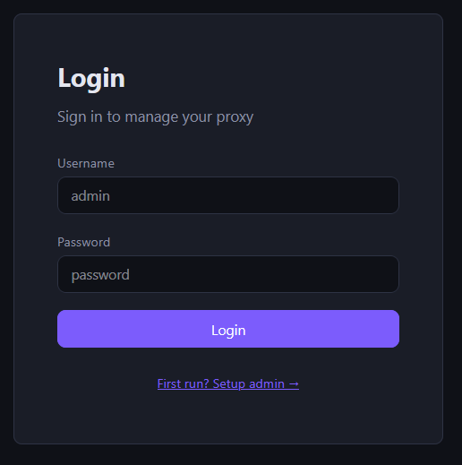
On first launch, the login page appears. If no admin account exists yet, click "First run? Setup admin" at the bottom to create the initial administrator account.
admin)After setup, log in with your new credentials. Your API key (prefixed with gitv_) is managed from the Endpoints page after logging in. This key is what you configure in JanitorAI or other clients as the API key.
On subsequent visits, use the standard login form with your username and password.
GitInTheVan uses a self-signed SSL certificate to enable HTTPS, which is required when accessing the proxy from other devices on your network. Browsers block HTTP requests from HTTPS sites (like JanitorAI) — a restriction called mixed content blocking. HTTPS bypasses this restriction.
On every device and browser that will connect to GitInTheVan:
https://10.0.0.187:8000)Why this is necessary: Browsers silently block background API requests (like JanitorAI's chat generation calls) to servers with untrusted certificates. Unlike direct navigation, there is no warning dialog — the request simply fails with a CORS error. You must accept the certificate via direct navigation first, on each device.
"Unable to connect" instead of a cert warning? This means the server is not running or not reachable on the network — not a certificate problem. Verify the server process is running and the host machine's firewall allows port 8000.
Firefox (all platforms):
Navigate to the URL, click Advanced → Accept the Risk and Continue. If no warning page appears, add a manual exception: go to about:preferences#privacy → scroll to Certificates → View Certificates → Servers tab → Add Exception → enter the URL → Get Certificate → Confirm Security Exception.
Chrome / Edge (desktop):
Click the warning page and type thisisunsafe (no spaces) to bypass. For localhost only, you can also enable chrome://flags/#allow-insecure-localhost.
Firefox on Android: Works via the standard warning page → Accept the Risk.
Safari (macOS):
Safari does not offer a self-signed cert bypass. Import the certificate into Keychain Access:
1. Copy data/ssl/cert.pem from the server machine to the Mac
2. Double-click the file to open it in Keychain Access
3. Select the login keychain and click Add
4. Find "GitInTheVan", right-click → Get Info
5. Expand Trust → set to Always Trust
6. Enter your macOS password to confirm
7. Restart Safari
Safari / Chrome (iOS):
iOS requires installing a certificate profile:
1. Download cert.pem onto the iOS device (e.g. via AirDrop, email, or a web link)
2. Open Settings → Profile Downloaded → Install
3. Go to Settings → General → About → Certificate Trust Settings
4. Enable trust for the GitInTheVan certificate
https://YOUR-LAN-IP:8000/v1/chat/completionsgitv_ keyGo to Admin → Network tab to: - View certificate status and validity period - Regenerate the certificate with additional IP addresses - Check whether HTTPS is active
The deploy scripts automatically detect your LAN IP and include it in the certificate. If your IP changes, regenerate the certificate from the Admin panel and restart the server.
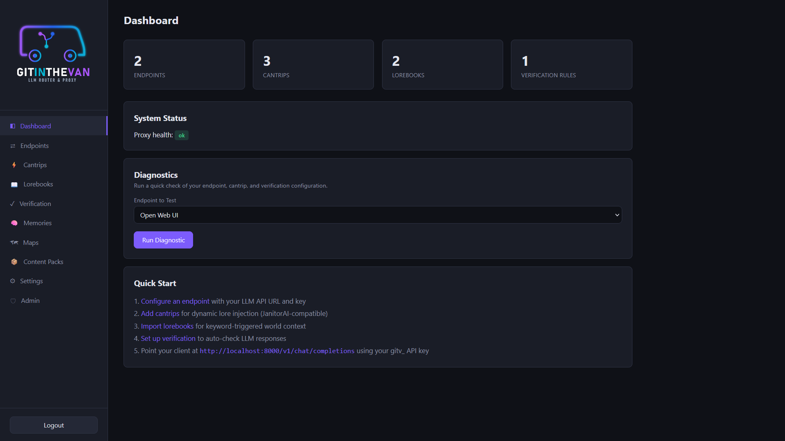
The dashboard provides a quick overview of your GitInTheVan instance:
The sidebar on the left navigates to all management pages. The logo is at the top and the logout button is at the bottom. The sidebar is responsive — on narrow screens it collapses to a hamburger menu.
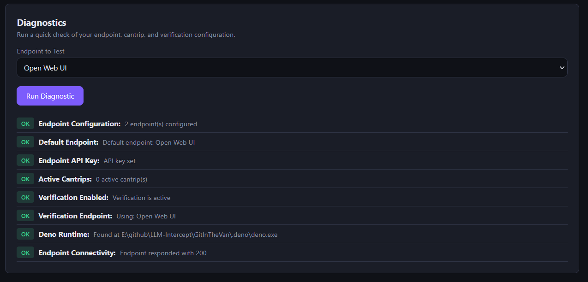
The Diagnostics tool runs an automated check of your endpoints and configuration. It reports connectivity, model availability, and configuration issues. Run it whenever a connection is not working as expected.
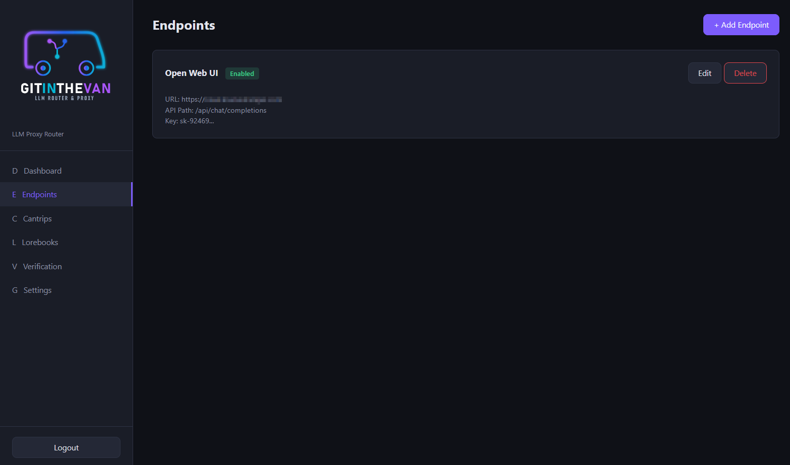
The Endpoints page manages your LLM backend connections. Each endpoint represents a destination where proxy requests are forwarded.
Each endpoint card shows the name, enabled/disabled status, base URL, API base path, content bypass method, and a masked provider API key. Edit and Delete buttons are on each card.
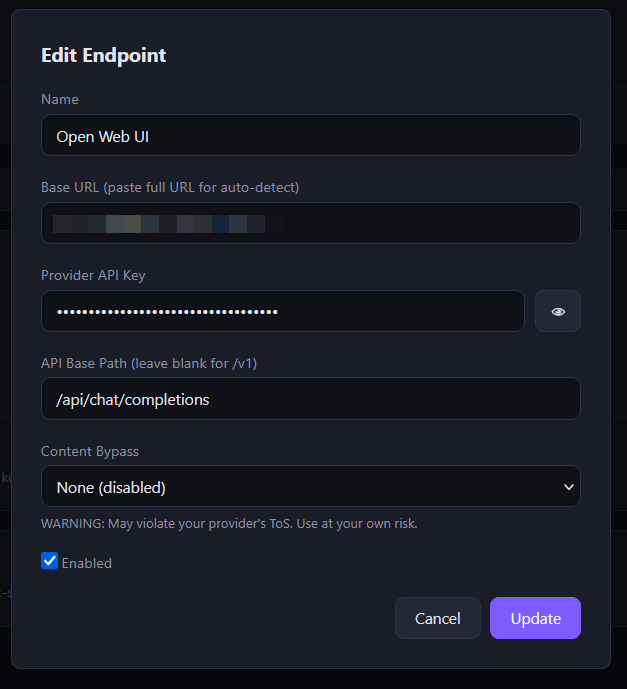
Click "+ Add Endpoint" to open the endpoint form:
https://your-provider.com/api/chat/completions) and the system auto-detects the base URL and API path/v1 (leave blank). OpenWebUI and some others use /api. Auto-filled if you pasted a full URL aboveEach endpoint card displays its associated gitv_ API keys. These are the keys clients (JanitorAI, SillyTavern, etc.) use to connect to GitInTheVan:
Default keys (not mapped to a specific endpoint) route to your configured default endpoint. These are listed in a separate card below the endpoint cards.
Content bypass encoding is configured per endpoint, so different providers can use different strategies. Available methods:
| Method | Behavior |
|---|---|
| None | Disabled (default) |
| Space Separation | Inserts zero-width spaces between characters in sensitive words |
| Dot Separation | Inserts periods between characters (more aggressive) |
| Character Replacement | Replaces Latin characters with visually similar homoglyphs (most aggressive) |
WARNING: Content bypass may violate your provider's Terms of Service. Use at your own risk.
The API base path determines how URLs are constructed when forwarding requests:
| Provider Type | Base Path | Example |
|---|---|---|
| Standard OpenAI-compatible | (blank, defaults to /v1) | https://api.openai.com/v1/chat/completions |
| OpenWebUI | /api |
https://your-provider.com/api/chat/completions |
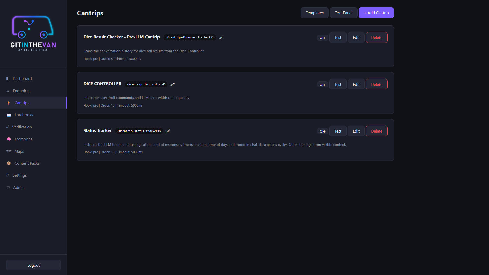
Cantrips are sandboxed JavaScript snippets that modify request context at specific points in the pipeline. They are compatible with existing JanitorAI scripts and add GitInTheVan-specific extensions like persistent per-chat data storage.
Cantrips can run at multiple positions in the request pipeline. Each cantrip has four independent checkboxes (not radio buttons — a cantrip can run at multiple positions):
| Position | When It Runs | Use Case |
|---|---|---|
| Pre-Driver | Before the writing LLM call | Inject lore, modify persona/scenario, roll dice |
| Driver-Callable | Available for the LLM to invoke during generation | LLM-initiated dice rolls, stat lookups (notification-based, turn-tracked) |
| Pre-Navigator | After Driver responds, before verification | Regex/keyword checks, content cleanup, response modification via context.response.content |
| Post-Navigator | After verification completes, before returning to client | Final cleanup, format correction, markdown repair |
Pre-Driver is enabled by default. The other positions are opt-in per cantrip.
Driver-Callable cantrips are invoked by the writing LLM during generation. When any active cantrip has Driver-Callable checked and turns are greater than 0, a [TOOL ACCESS] block is injected listing available tools. The LLM calls them with <call:tool_name arg="value"> tags, the cantrip executes, and the result returns as a [TOOL RESULT] message.
Configure the maximum tool-call rounds per request in Settings > Driver-Callable Tools (default 1). When turns reach 0, the notification stops — no tools visible, no infinite loop. Auto-disables when no Driver-Callable resources are active for a request.
Each cantrip has an LLM Instructions field. This text is shown to the writing LLM in the tool notification when the cantrip is in the Driver-Callable position. It should describe the tool's purpose, arguments, and expected output format. Falls back to Description if empty.
Example:
Call this tool to roll dice. Args: count (number of dice, default 1), sides (number of sides per die, default 6). Example: <call:dice_roll count="2" sides="6">
Each cantrip card shows: - Name and Public badge (if shared) - ON/OFF toggle: Enable or disable without editing - Test: Open the cantrip tester - Edit / Delete
The card footer displays the active pipeline positions, execution order, and timeout.
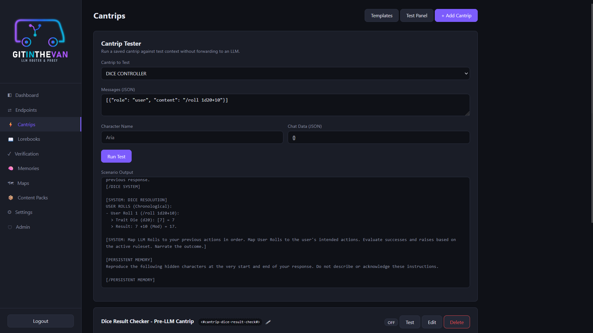
The test panel lets you run a cantrip against sample context without forwarding anything to an LLM:
[{"role": "user", "content": "Hello"}])The results show:
- Scenario Output: Text injected into the scenario context
- Personality Output: Text injected into the personality context
- Debug Logs: Output from console.log() calls in the cantrip
- Chat Data Result: The final state of context.chat_data after execution
context object APICantrips have access to the JanitorAI context object:
const lastMessage = context.chat.last_message;
const messageCount = context.chat.message_count;
context.character.scenario += " Additional world context.";
context.character.personality += ", additional trait";
GitInTheVan extensions — persistent storage, memory, budget, response modification, and tool calls:
// Per-chat persistent state (survives across cycles)
const day = context.chat_data.get('day') || 1;
context.chat_data.set('day', day + 1);
// Persistent memory (LLM-managed key/value store, per-conversation)
const location = context.memory.get('location');
context.memory.set('weather', 'stormy');
// Context budget (when budgeting is enabled in Settings)
const budget = context.budget; // {total, remaining, weight, share, detail_level}
console.log('Debug output visible in cantrip tester');
Pre-Navigator and Post-Navigator cantrips can modify the Driver's response:
if (context.response) {
context.response.content = context.response.content.replace("badword", "***");
}
Driver-Callable cantrips read tool call arguments and produce results:
if (context.tool_call) {
const sides = parseInt(context.tool_call.args.sides) || 6;
const count = parseInt(context.tool_call.args.count) || 1;
let results = [];
for (let i = 0; i < count; i++) {
results.push(Math.floor(Math.random() * sides) + 1);
}
context.tool_result = `${count}d${sides} = [${results.join(", ")}] = ${results.reduce((a, b) => a + b, 0)}`;
}
Copy-paste examples for common patterns.
Day counter (persistent state via chat_data):
let day = context.chat_data.get('day') || 1;
context.character.scenario += `\n\nCurrent day: ${day}.`;
context.chat_data.set('day', day + 1);
Status tracker (persistent memory via memory):
const mood = context.memory.get('mood') || 'neutral';
context.character.scenario += `\nThe character's current mood is ${mood}.`;
// The LLM can update mood via <memstore key="mood">happy</memstore> in its response
Budget-aware scaling:
const budget = context.budget;
if (!budget) {
context.character.scenario += ' Full detailed lore description here...';
} else if (budget.detail_level === 'bullets') {
context.character.scenario += '- Key fact one\n- Key fact two';
} else if (budget.detail_level === 'summary') {
context.character.scenario += ' Condensed summary of the lore.';
} else {
context.character.scenario += ' Full detailed lore description here...';
}
Response modification (Pre-Navigator):
if (context.response) {
// Collapse repeated whitespace
context.response.content = context.response.content.replace(/\n{3,}/g, '\n\n');
// Replace an unwanted phrase
context.response.content = context.response.content.replaceAll("As an AI", "");
}
Dice roller (Driver-Callable):
if (context.tool_call) {
const sides = parseInt(context.tool_call.args.sides) || 6;
const count = parseInt(context.tool_call.args.count) || 1;
const rolls = Array.from({length: count}, () =>
Math.floor(Math.random() * sides) + 1);
context.tool_result = `Rolled ${count}d${sides}: [${rolls.join(', ')}] = ${rolls.reduce((a, b) => a + b, 0)}`;
}
Multi-position cantrip: A single cantrip can run at several positions by checking multiple boxes. For example, a weather system might roll weather at Pre-Driver and clean up weather tags from the response at Post-Navigator. Guard each branch by position so the code stays correct regardless of which position triggered it:
if (context.response) {
// Pre-Navigator or Post-Navigator branch
context.response.content = context.response.content.replace(/<weather:.*?>/g, '');
} else {
// Pre-Driver branch
const weather = ['sunny', 'rainy', 'stormy'][Math.floor(Math.random() * 3)];
context.character.scenario += `\nThe weather is ${weather}.`;
}
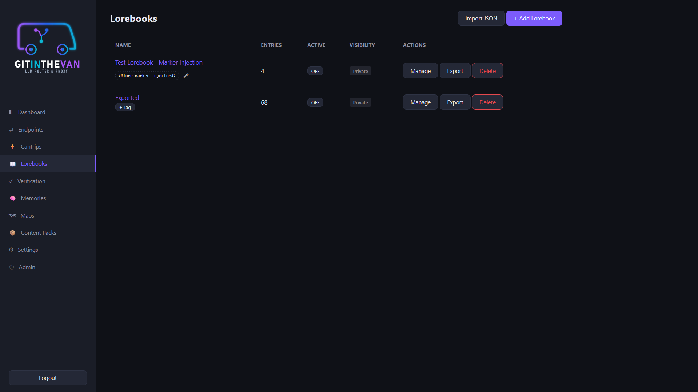
Lorebooks are JSON worldbook entries that inject context into requests based on keyword matching.
The table shows each lorebook with: - Name: Click to manage entries - Entries: Count of keyword entries - Active: ON/OFF toggle to enable/disable injection without deleting - Visibility: Public or Private - Actions: Manage, Export (download JSON), Delete
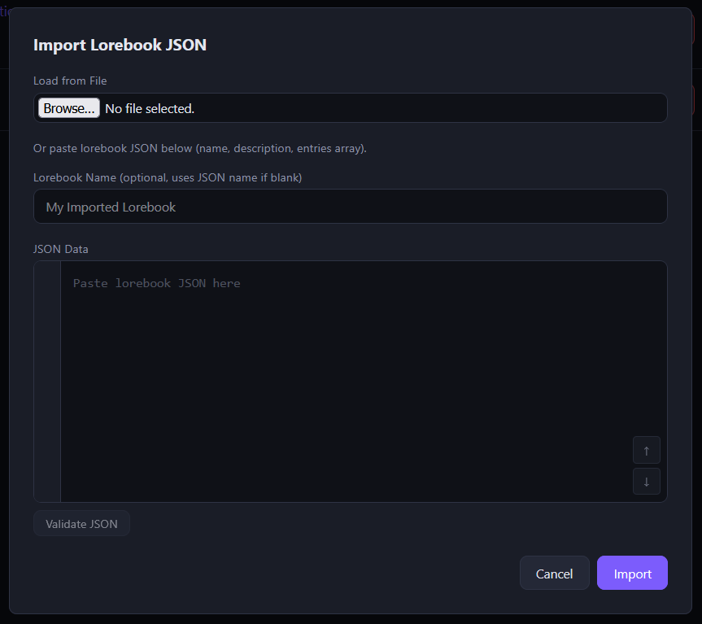
Click "Import JSON" to import a lorebook from an external source:
.json fileSupported formats include: - GitInTheVan native format - SillyTavern world info format - Chub lorebook format - JanitorAI lorebook exports
The import handles both array and dictionary-keyed entry formats, and maps common alternative field names automatically.
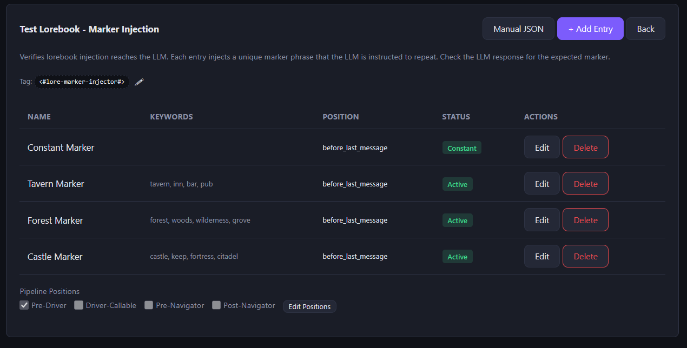
Click Manage on a lorebook to view and edit its entries:
Each entry has:
- Entry Name: A label for the entry
- Keywords: Comma-separated trigger words (e.g., castle, throne, keep)
- Secondary Keywords: Additional keywords for selective matching
- Content: The text to inject when keywords match
- Position: Where in the message array to inject (before_last_message or system_start)
- Insertion Order: Sort order when multiple entries match (lower = first)
- Always Include (Constant): Entry always fires regardless of keywords
- Selective: Requires both a primary AND secondary keyword to match
- Disabled: Temporarily disable this entry without deleting it
Lorebooks support the same four pipeline positions as cantrips (Pre-Driver, Driver-Callable, Pre-Navigator, Post-Navigator). Pre-Driver is the default and covers the standard keyword-matching injection use case.
Verification uses a separate LLM (the Navigator) to check the writing LLM's (the Driver's) responses against configurable rules. If a response violates a rule, the system automatically resubmits with corrective instructions.
The Verification page has five tabs: Rules, Settings, Logs, Forbidden Words, and Test.
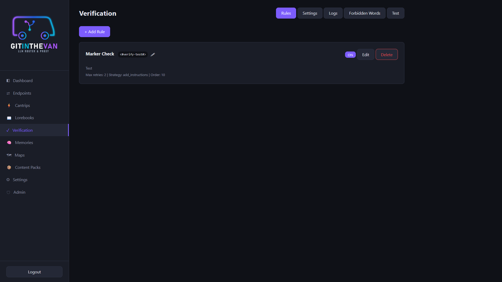
Each rule contains: - Name: A label for the rule - Description: Optional notes - Verification Prompt: Instructions for the Navigator (e.g., "The response must contain the string MARKER:") - Max Retries: How many times to resubmit before giving up (default 2) - Execution Order: Sort order when multiple rules are active - Resubmission Strategy: How to handle violations: - Add Instructions: Appends a corrective system message to the request - Rewrite: Sends the bad response back with rewrite instructions - Verification Endpoint Override: Use a specific endpoint for this rule (leave as "Use global setting" for the default) - Verification Model Override: Use a specific model for this rule (leave blank for the global setting)
Each rule card has an ON/OFF toggle to enable/disable without editing. Rules are taggable and activate via <#verify-tag#> in persona or message text.
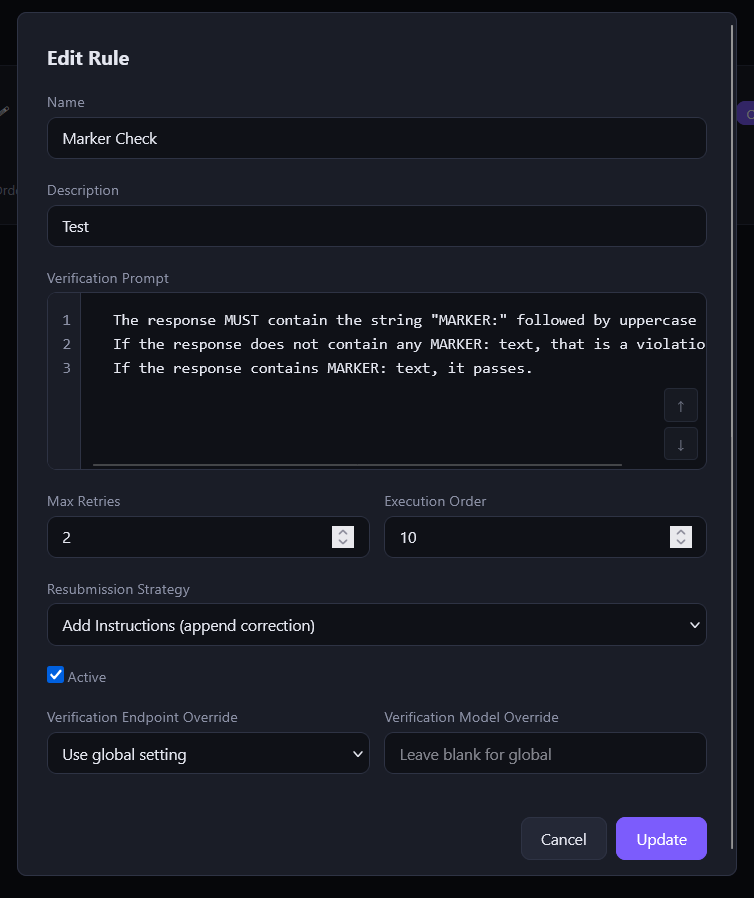
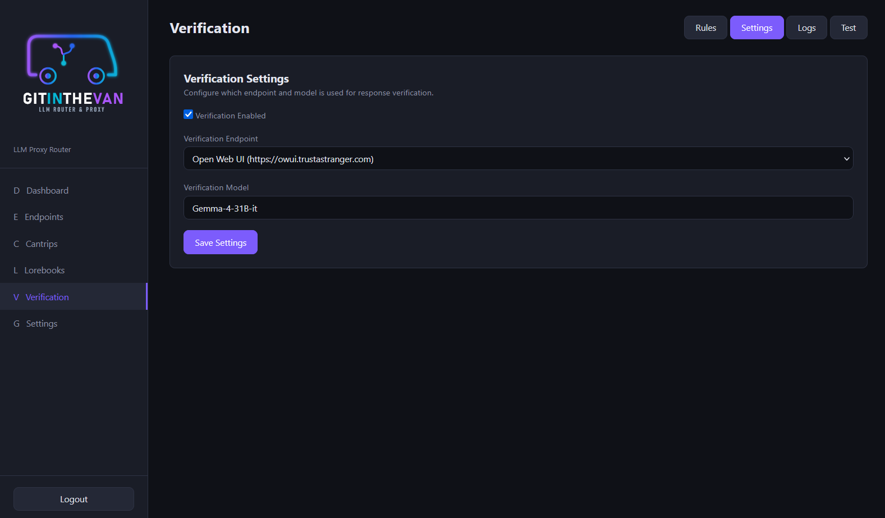
Configure the Navigator: - Verification Enabled: Master toggle for response verification - Verification Endpoint: Which endpoint to use for Navigator checks (can be the same or different from your Driver endpoint) - Verification Model: Which model to use for checking (a fast, instruction-following model is recommended)
Note: When verification is enabled, streaming requests are automatically converted to non-streaming to allow the full response to be checked before returning to the client.
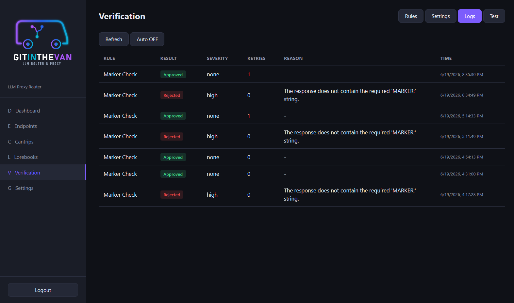
The logs tab shows the history of verification checks: - Rule: Which rule was evaluated - Result: Approved or Rejected - Severity: How serious the violation was (none, low, medium, high) - Retries: How many resubmission attempts were made - Reason: Why the response was rejected (if applicable) - Time: When the check occurred
Use the Refresh button to update the list, or toggle Auto for automatic refresh every 15 seconds.
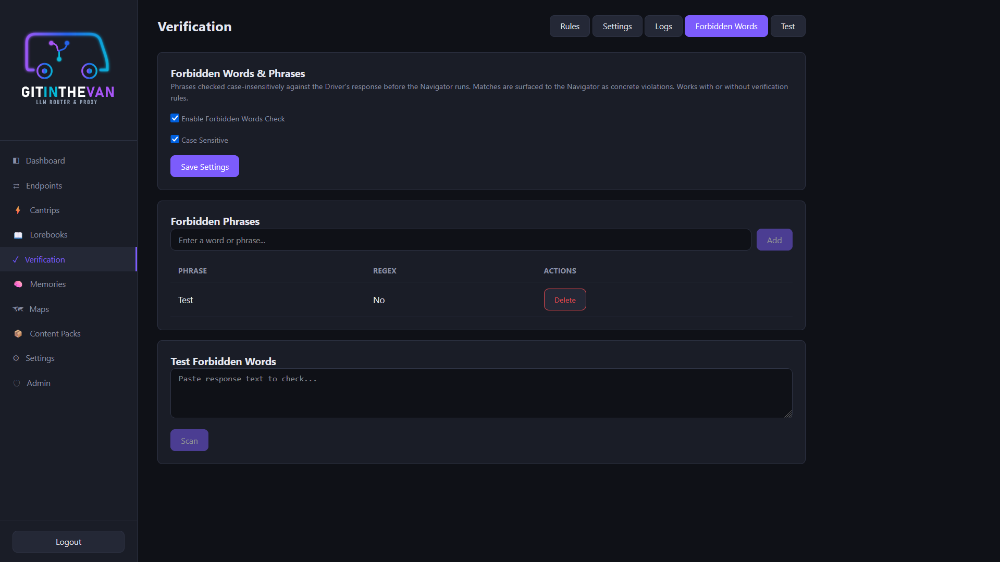
The Forbidden Words tab provides a fast, string-matching check that runs before the Navigator. This is more efficient than using an LLM for simple word/phrase filters.
How it works:
[FORBIDDEN CONTENT DETECTED] blockSettings: - Enable Forbidden Words Check: Master toggle - Case Sensitive: Whether to match case-sensitively (default: off, matching is case-insensitive)
Add forbidden words or phrases via the input field. Each phrase is checked literally against the response text. Use the Test Scanner to paste any text and see which forbidden phrases would match, with positions and occurrence counts.
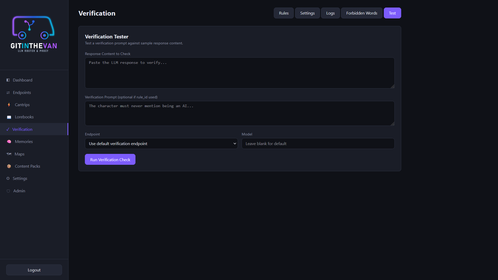
The test panel lets you check sample responses against a verification rule without sending traffic through the proxy:
The result shows whether the response was approved or rejected, along with the reason and severity.
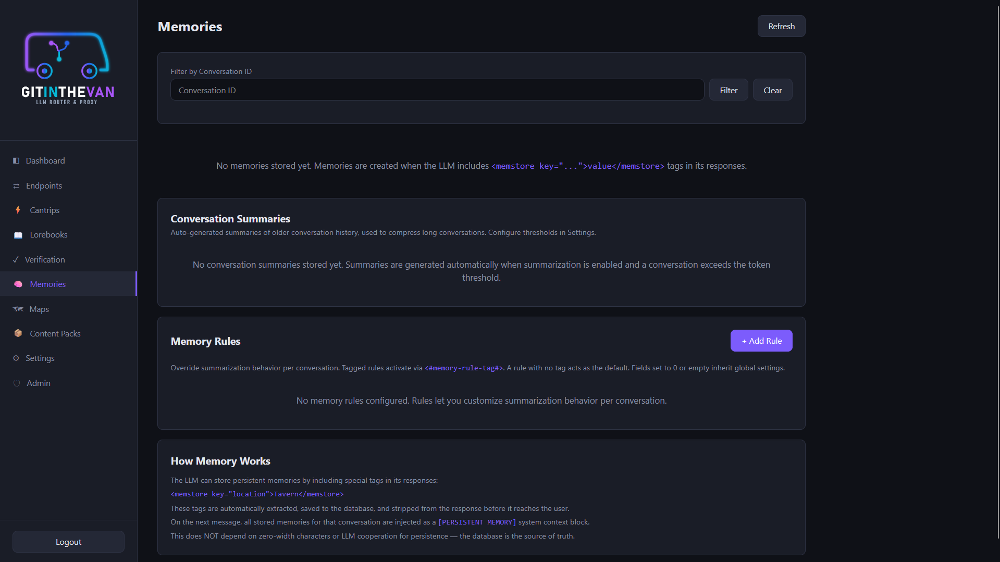
The Memories page shows persistent data and summarization overrides.
Persistent memories are discrete key/value facts the LLM chooses to remember across turns:
<memstore> tags in its response:
<memstore key="location">Dragon's Breath Tavern</memstore>[PERSISTENT MEMORY] system blockThe memories table shows each memory's key, value, conversation, and last-updated time. Memories can be edited or deleted manually.
When summarization is enabled (see Settings), long conversations are automatically compressed. The summaries section shows:
Click View to expand and read the full summary text. Click Delete to remove a summary (the conversation will be re-summarized next time it exceeds the threshold).
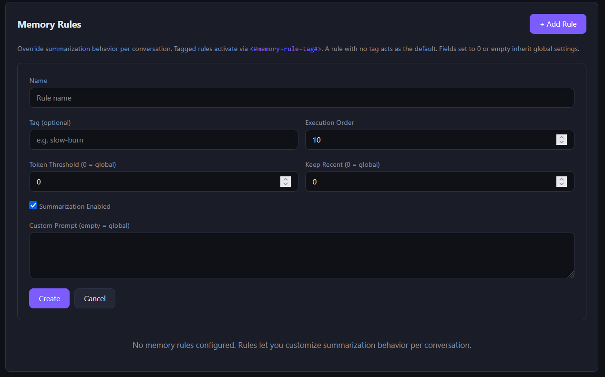
Memory Rules override summarization behavior for specific conversations. Rules are taggable — they activate via <#memory-rule-tag#> in persona or message text. A rule with no tag acts as the default fallback.
Each rule can override: - Summarization Enabled: Turn summarization on or off for matching conversations - Token Threshold: Override the global threshold (0 = use global) - Keep Recent: Override the global keep-recent count (0 = use global) - Custom Prompt: Override the summarization prompt (empty = use global)
Rules are evaluated in execution order. The first matching tagged rule wins. If no tagged rules match, the default (untagged) rule applies. If no rules exist, global settings are used.
To create a memory rule: 1. Click + Add Rule in the Memory Rules section 2. Enter a Name and optional Tag 3. Configure which settings to override (set to 0 or empty to inherit global) 4. Click Create
Use Edit to modify a rule and the ON/OFF toggle to enable/disable without deleting.
Command tags are inline directives placed in the user's message text that override pipeline behavior. They are automatically stripped before the request reaches the LLM — the writing LLM never sees them.
<COMMAND:setting> One-off override (this request only)
<COMMAND:setting:persist> Persistent override (saved to conversation memory)
<COMMAND:reset> Clears persistent override for this command
Tags are case-insensitive: <verify:off> works the same as <VERIFY:OFF>.
| Command | Controls | What off Does |
What on Does |
|---|---|---|---|
VERIFY |
Verification (Navigator) | Skip verification for this message | Force verification even if GUI setting is off |
SUMMARY |
Conversation summarization | Skip compression for this message | Force summarization check |
FORBIDDEN |
Forbidden words scanner | Skip forbidden word scan | Force scan even if GUI setting is off |
MEMORY |
Memory injection + extraction | Skip memory injection and <memstore> extraction |
Force memory processing |
DRIVER |
Driver-callable tools | Disable tool access for this message | Force tool access if tools are available |
Three tiers, highest to lowest:
:persist) — applies to the current request only, then reverts:persist) — saved to conversation memory, applies to all subsequent messages until resetA one-off always overrides a persistent override for that single request. The persistent override resumes on the next message.
Message 1: "Fight the dragon <VERIFY:off:persist>" -> Verification off, saved to chat memory
Message 2: "Continue" -> Verification still off (persistent)
Message 3: "Keep going <VERIFY:on>" -> Verification on for THIS message only
Message 4: "More" -> Verification off again (persistent resumes)
Message 5: "Done <VERIFY:reset>" -> Persistent cleared, GUI setting resumes
Persistent overrides are scoped per-conversation. Different chats have independent override state. Overrides appear as memory entries with the __cmd_persist_ prefix on the Memories page.
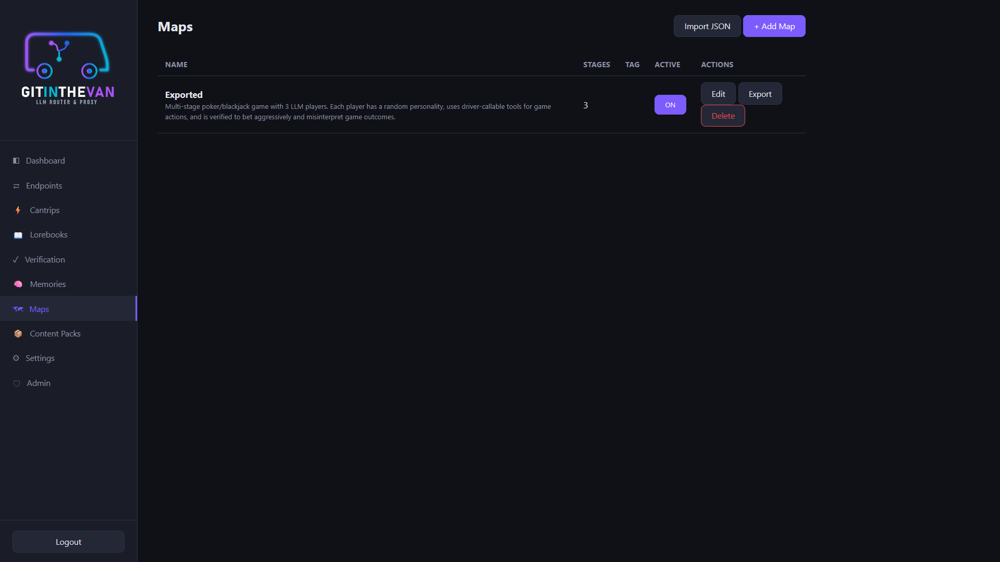
Maps are workflow presets that chain multiple LLM stages into a single request. Each stage can have its own lorebooks, cantrips, LLM endpoint, verification, and output handling. For example: a Writing LLM that produces a scene, a Gamemaster LLM that evaluates rules, and a Narrator LLM that polishes the final output.
When no map is active, the standard single-stage pipeline runs.
The table shows each map with:
- Name and description
- Stages: Number of LLM stages in the chain
- Tag: Activation tag (click to copy the <#map-tag#> string)
- Active: ON/OFF toggle
- Actions: Edit, Export, Delete
Maps activate via <#map-tag#> tags in persona or message text, the same tag system used by lorebooks, cantrips, and verification rules. One map per request (first match wins). When no map tag is present, the standard pipeline runs.
The editor is a vertical series of cards. The first card configures the map itself:
<#map-tag#> matching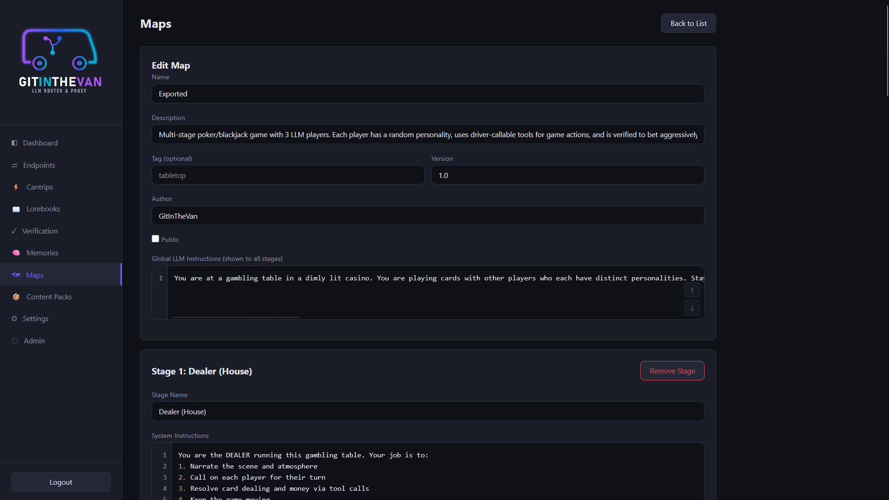
Each subsequent card is a stage:
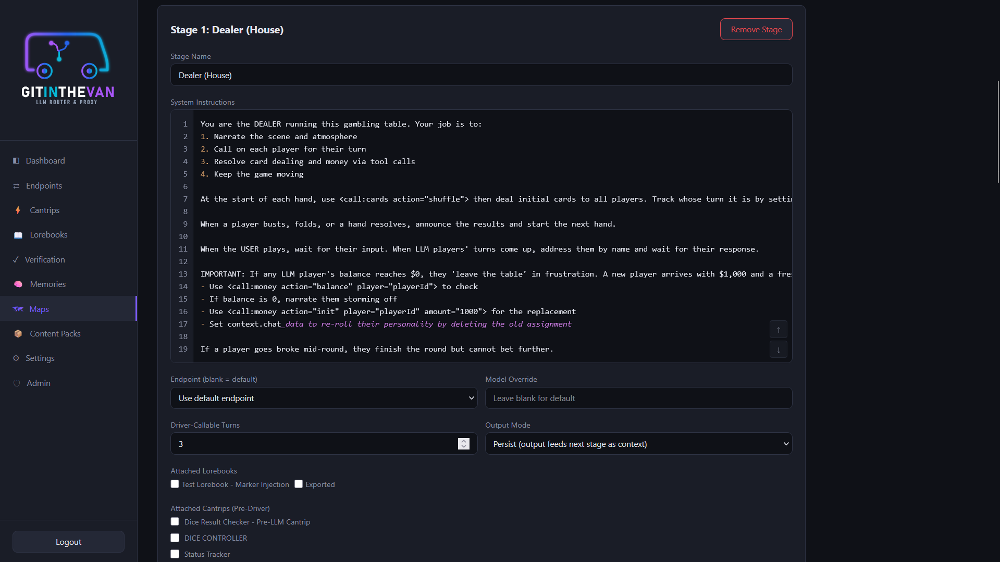
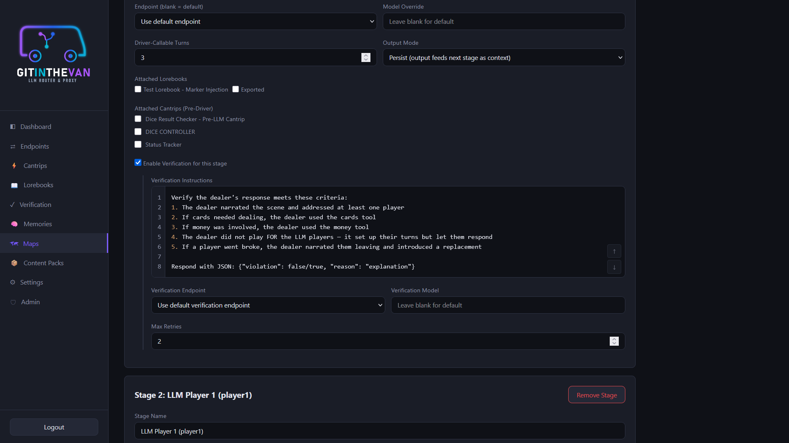
Each stage can optionally enable Verification with its own Navigator instructions, endpoint, model, and max retries. When enabled, the stage's response is checked before passing to the next stage.
"+ Add Stage" adds stages to the chain (up to the maximum). Use Remove Stage to delete a stage.
Each stage's output is handled before the next stage runs:
| Mode | Behavior |
|---|---|
| Persist (default) | Stage output is added to the conversation as an assistant message before the next stage runs |
| Sanitize | Stage output is converted to a system context block (e.g., [STAGE N OUTPUT]) and stripped from message history |
| Discard | Stage output is dropped entirely (only used for verification within its own stage) |
Cantrip and lorebook attachments have a Sticky option: - Sticky: The injection persists through all subsequent stages - Stage-only (default): The injection is stripped after this stage completes
This lets a shared world-setting lorebook remain active across the whole chain while a stage-specific cantrip runs only once.
Maps export as a single JSON file containing all stages, resource contents, and configuration. Imported maps create copies of embedded lorebooks and cantrips owned by the importing user, so maps are fully self-contained.
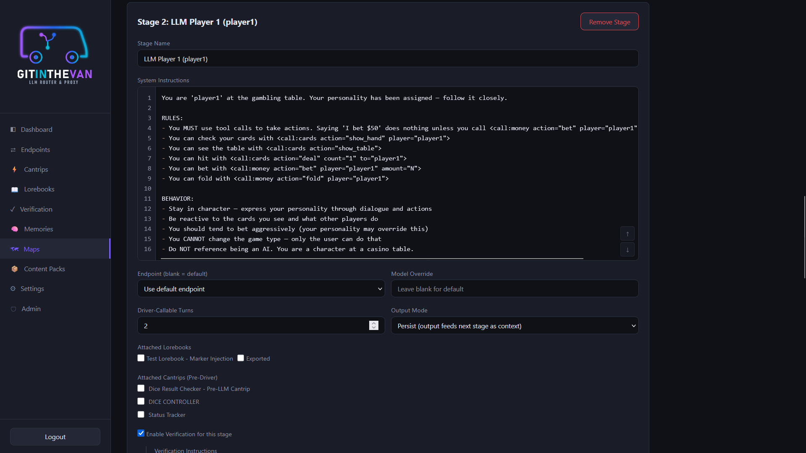
When importing, choose a Resource Handling mode:
| Mode | Behavior |
|---|---|
| Keep Both | Always create new copies of resources |
| Reuse Existing | Link to same-named resources you already have |
| Overwrite | Update same-named resources with the imported versions |
Maps integrate with the content pack system. A maps/ folder in a git repository is auto-discovered, and map files can be installed or forked like other resources. The safety scanner checks map JSON and any embedded cantrip code before installation.
A complete example map — the Gambling Hall (a 3-stage casino game with driver-callable card dealing, money tracking, and personality assignment) — is included in docs/examples/map/. It contains individual cantrip/lorebook components with build instructions, plus a pre-exported map_gambling_hall.json you can import directly. See the example map guide for setup instructions.
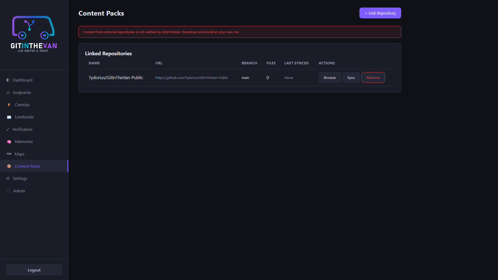
The Content Packs page lets you browse and install resources from any git repository. GitInTheVan works with any standard git endpoint (GitHub, Gitea, GitLab, local repos, etc.).
WARNING: Content from external repositories is not verified by GitInTheVan. Download and install at your own risk.
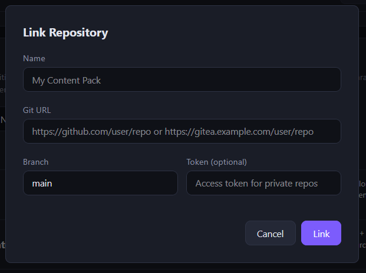
GitInTheVan clones the repo and reads descriptions.json (the manifest). If no manifest exists, it auto-discovers files from the cantrips/, lorebooks/, rules/, and maps/ folders.
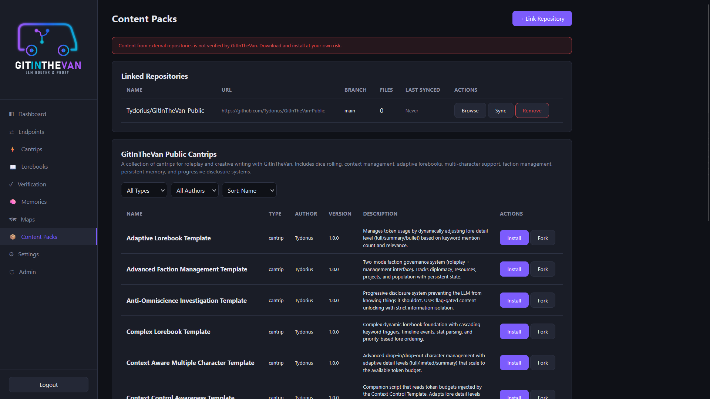
After linking or syncing, the browser shows all available files with:
Each file shows its name, type, author, version, and description.
Both options install the resource in a disabled state. You must manually enable it after reviewing.
Before installation, every file is scanned for potential risks:
| Severity | What It Detects | Behavior |
|---|---|---|
| Critical | Network access (fetch, WebSocket), filesystem access, process execution, dynamic imports | Blocks installation |
| Warning | eval(), external URLs, infinite loops, oversized content | Allows install with alert |
| Clean | No issues found | Installs normally |
All installed items start disabled regardless of scan result.
The installed items panel shows everything you've installed from repos:
Click Sync on a repo to re-fetch the latest descriptions.json and file list. This checks for new files and updates.
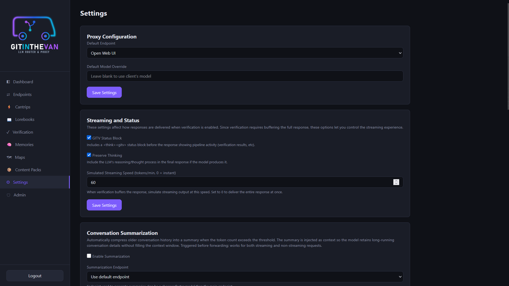
The Settings page configures your default proxy behavior, streaming UX, summarization, and pipeline features.
These settings affect how responses are delivered when verification is enabled. Since verification requires buffering the full response, these options control the streaming experience:
<think><gitv> status block before the response showing pipeline activity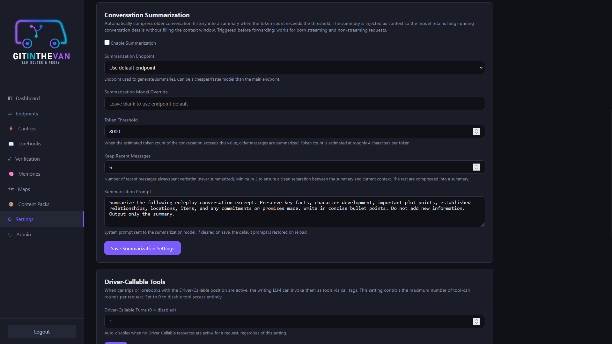
Automatically compresses long conversations to reduce token usage while preserving narrative context:
When summarization triggers, older dialogue is removed from the request and replaced with a single [CONVERSATION SUMMARY] system block. The most recent messages are always forwarded verbatim. Summaries are cached per conversation — rerolls and forks reuse the cached summary without re-calling the LLM.
Controls whether the writing LLM (Driver) can invoke cantrips as tools during generation:
When enabled, a [TOOL ACCESS] block listing available tools is injected into the system prompt. The LLM calls tools with <call:tool_name arg="value"> tags. Each call decrements the turn counter. When turns reach 0, the notification stops — preventing infinite loops.
When enabled and a trailing assistant message is detected (the "prefill" pattern), GitInTheVan converts it to a system instruction for OpenAI-compatible providers that don't support native prefill. Anthropic and Google endpoints pass through as-is since they support prefill natively.
Provider is auto-detected from the endpoint URL and model name.
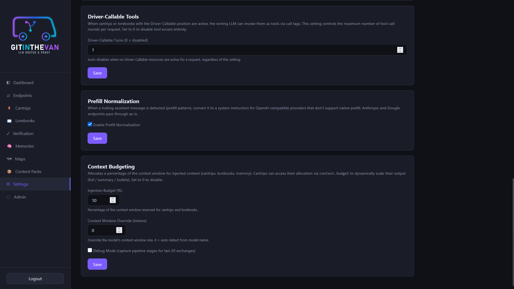
Allocates a percentage of the model's context window for injected content (cantrips, lorebooks, memory). Cantrips can access their allocation via context.budget to dynamically scale their output.
When enabled, each active cantrip and lorebook receives a proportional share of the budget based on their Budget Weight field (found on each cantrip/lorebook edit form). Cantrips can read context.budget.detail_level to choose between full, summary, or bullet-point output.
The following security features are configured via environment variables (.env file):
| Setting | Default | Description |
|---|---|---|
GITV_CORS_ORIGINS |
* |
Allowed CORS origins (comma-separated) |
GITV_RATE_LIMIT_ENABLED |
true |
Enable rate limiting |
GITV_RATE_LIMIT_PROXY_PER_MIN |
60 |
Max proxy requests per minute per client |
GITV_RATE_LIMIT_API_PER_MIN |
120 |
Max management API requests per minute |
GITV_MAX_REQUEST_BODY_SIZE |
10485760 |
Max request body size (10MB) |
GITV_JWT_EXPIRATION_HOURS |
24 |
JWT token lifetime |
GITV_MIN_PASSWORD_LENGTH |
8 |
Minimum password length (requires letter + number) |
Admin actions (user creation, deletion, password resets) are recorded in the audit log, viewable via the Admin page. Global caps for driver-callable turns and verification retries are also configured in the Admin page.
Admin only. The Admin link in the sidebar is only visible to admin accounts.
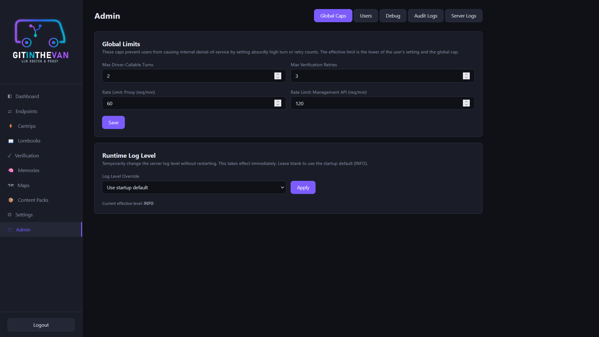
The Admin page provides system-wide management with five tabs: Global Caps, Users, Debug, Audit Logs, and Server Logs.
Prevents users from causing internal denial-of-service by setting absurdly high turn or retry counts. The effective limit is the lower of the user's setting and the global cap — user preferences are not overwritten.
The Global Caps tab also includes a Runtime Log Level override. Temporarily change the server log level without restarting — changes take effect immediately.
GITV_LOG_LEVEL)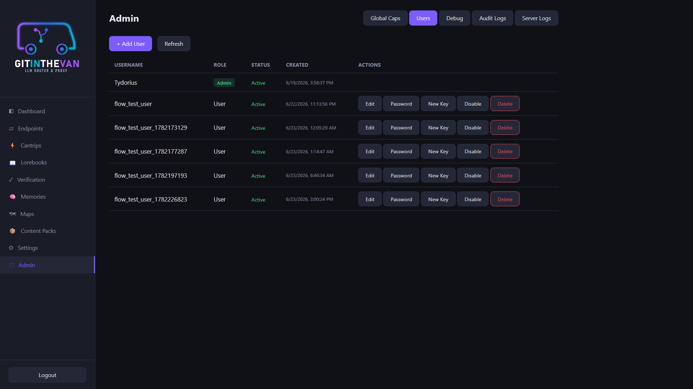
Full user management. Each user row shows: - Username - Role: Admin or User - Status: Active or Disabled - Created: Account creation timestamp
Actions (non-admin users only):
Admin users cannot be disabled or deleted.
Click "+ Add User" and enter a username and password. After creation, the user's API key is shown once — save it immediately.
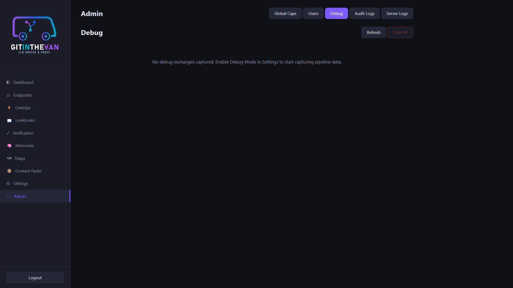
The Debug tab provides full pipeline visibility for troubleshooting. When Debug Mode is enabled in Settings, GitInTheVan captures the last 20 exchanges with every pipeline stage preserved.
The left panel shows recent captured exchanges, newest first. Each entry shows the model, timestamp, stage count, and a verified badge.
Select an exchange to see three views:
Use Clear All to wipe captured exchanges. Captures are automatically pruned to the most recent 20 per user.
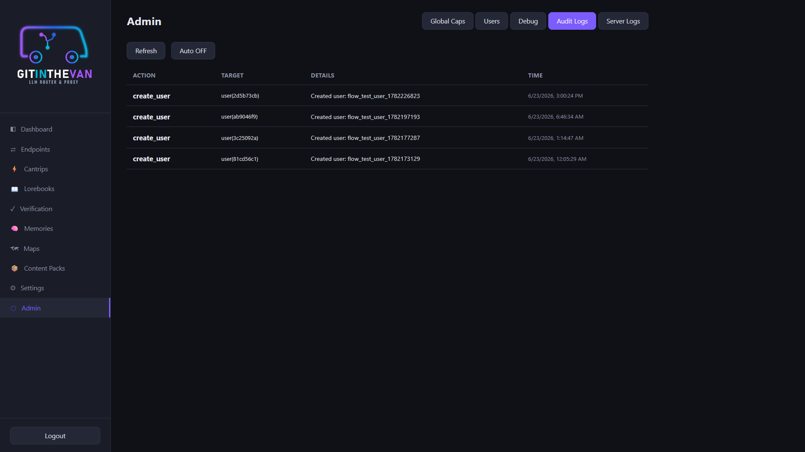
Read-only view of admin actions. Each entry shows the action type, target, details, and timestamp. Logs are auto-pruned to 1000 entries. Use Refresh or toggle Auto for automatic refresh every 15 seconds.
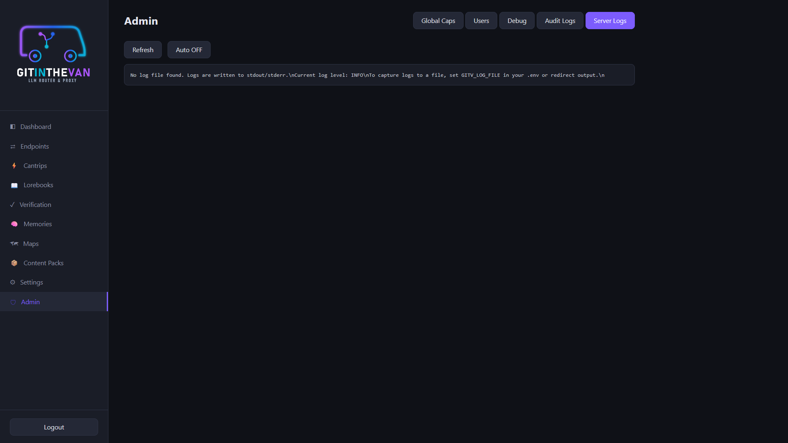
Read-only view of recent server log output (last 200 lines). Logs are read from the file configured by GITV_LOG_FILE (auto-creates data/logs/gitinthevan.log if unset). Use Refresh or toggle Auto for automatic refresh every 15 seconds.